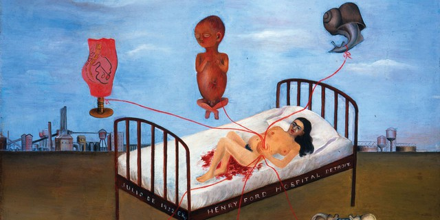
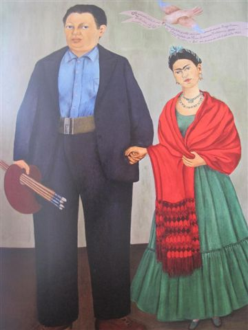
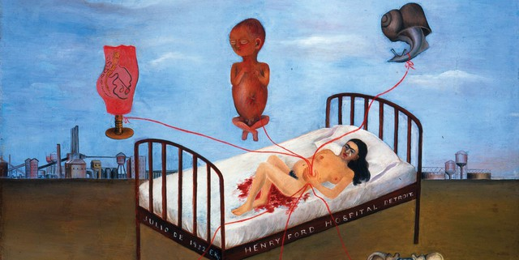
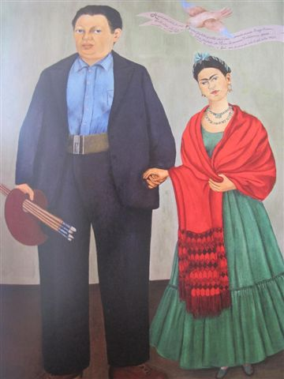

Frida Kahlo "Le surréalisme est la surprise magique de trouver un lion dans un placard, là où on était sûr de trouver des chemises." Sa vie
Bienvenue: Sa vie Ses oeuvres
Peindre sa vie
Alors âgée de 18 ans, Frida Kahlo, déjà atteinte de poliomyélite depuis ses 6 ans,
transpercée par une barre de bus dans un terrible accident avec un tramway.
Son abdomen est perforé, son dos blessé, elle est contrainte à de multiples opérations chirurgicales et à l’alitement.
Elle se met alors à peindre, et représente son drame sur ses toiles : dans "Souvenir ou le coeur" (1937),
une barre de bus la transperce, dans "Arbre de l'espérance, tiens toi droit" (1946), elle dessine son dos meurtri.
Sur un autre tableau encore, "Autoportrait avec le portrait du Docteur Farill" (1951), elle rend hommage à son médecin et
se représente à ses côtés, dans un fauteuil roulant.
Christina Burrus, auteure de "Frida Kahlo" aux éditions Gallimard découvertes, voit dans son malheur la source de son envie de vivre et d’écrire cette vie au pinceau : "Elle a toujours un regard analytique. Elle est malade, elle s’en plaint évidemment à des amis car elle souffre, mais en même temps elle surmonte. Je crois que ses maladies, ses souffrances, sont pour elle une force de vie."
 


